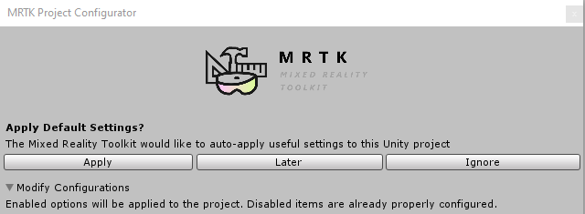
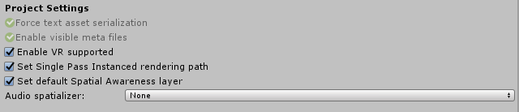
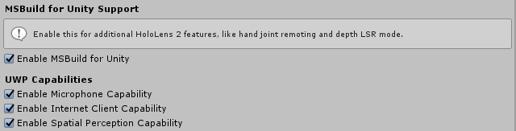
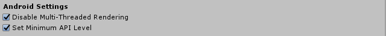
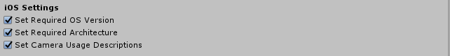

MRTK项目配置对话框
当Unity加载一个项目并且确定一个或多个配置选项需要开发者注意时，MRTK配置对话框就会显示出来。

要应用更改，请单击Apply按钮。Later按钮将推迟更改，直到将来重新加载项目。
Note
如果未选中一个或多个推荐设置，配置对话框将重新出现。为了防止这种情况发生，应用所需的选项，然后通过 Mixed Reality Toolkit > Utilities > Configure Unity Project重新启动对话框，并单击Ignore。这将阻止配置对话框自动重新出现。
通用设置
所有构建目标共享一组通用设置。

Force text asset serialization and Enable visible meta files
强制文本资源序列化，并启用可见元文件
这些设置有助于简化Unity项目和源代码控制系统(例如:Git)的工作。
启用VR支持
Unity 2018
在Player Settings > XR Settings中配置支持的虚拟现实和虚拟现实SDK选项。
Set Single Pass Instanced rendering path
设置单次实例化渲染路径
配置 Player Settings > XR Settings > Stereo Rendering Mode 为 Single Pass Instanced.
Set default Spatial Awareness layer
设置默认的空间感知层
将Spatial Awareness注册为第31层，以实现raycast和物理选项的简单和一致配置
Audio spatializer
空间音频播放技术
Audio spatializers 是解开空间声音和位置音频的力量，使混合现实体验真正身临其境的组件。
Note
将audio spatializer设置为None将禁用位置音频特性。
Common spatializers 常见的定位技术
- Microsoft Spatializer
微软在HoloLens 2上提供了支持利用硬件加速的spatializer。
该spatializer可通过NuGet和GitHub获得。
更多关于Microsoft Spatializer的细节可以在Spatial Sound 文档中找到.
- MS HRTF Spatializer
作为Windows混合现实和Windows XR平台包的一部分，由Unity提供的Microsoft Windows spatializer。
- Resonance Audio
一个由Unity提供的谷歌的跨平台spatializer。
更多信息可以在Resonance Audio 文档 网站上找到.
Universal Windows Platform settings 通用Windows平台设置

Enable MSBuild for Unity
Unity 2019.2 and earlier
MSBuild for Unity是一个可以自动恢复特定NuGet包的组件。在这个版本中，在Unity中启用MSBuild后将安装Microsoft.Windows.MixedReality.DotNetWinRT包。
UWP 功能
为通用的Windows平台应用程序启用特定的应用程序功能。这些功能使平台能够通知和请求允许启用特定功能的权限。
Microphone
使捕获声音通过麦克风。
Internet Client
启用对访问internet上的资源的支持。
Spatial Perception
支持使用真实环境。
Eye Gaze
Unity 2019.3 and newer
支持跟踪用户的眼睛凝视。
Android settings
Android设置
配置设置，以支持Android设备上的AR应用程序。

Disable Multi-Threaded Rendering 禁用多线程渲染
禁用 Player Settings > Other Settings > Multithreaded Rendering 根据Android的AR支持要求。
Set Minimum API Level 设置最小API级别
设置 Player Settings > Other Settings > Minimum API Level 的值来强制执行AR应用程序的操作系统要求。
iOS settings
iOS设置
配置设置，以支持iOS设备上的AR应用。

Set Required OS Version 设置所需的操作系统版本
设置 Player Settings > Other Settings > Target minimum iOS Version 用于增强现实应用的操作系统要求。
Set Required Architecture 设置所需的架构
设置 Player Settings > Other Settings > Architecture 的值，以加强AR应用的平台需求。
Set Camera Usage Descriptions 设置相机使用说明
设置 Player Settings > Other Settings > Camera Usage Description 用于请求使用设备相机的权限。